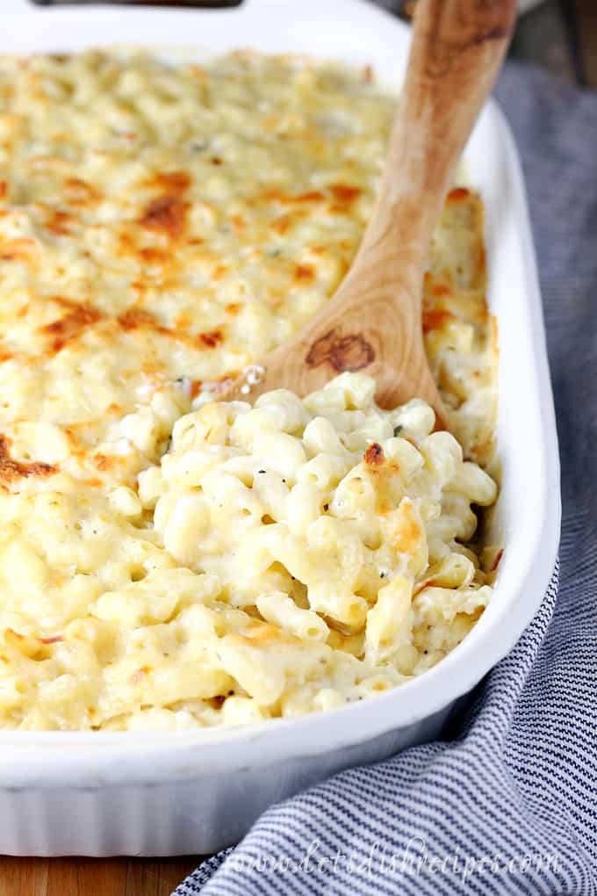

Shai's Mac 'N Cheese

The Comfort Staple
This white cheddar mac 'n cheese with onions is a comfort food you'll keep coming back to. The top is perfectly crisped, with a gooey cheesy middle. The sharpness of the white cheddar and the texture and flavor of the onions rounds out this homemade staple.
Ingredients
- 2 cups elbow pasta
- 2 tablespoons buter
- 1 onion, chopped
- 1 tablespoon flour
- 1 teaspoon salt
- 1/4 teaspoon ground mustard
- generous dash of pepper
- 1 1/2 cups milk
- 2 cups shredded cheese (and a little extra for the top)
Steps
- Preheat oven to 350 degrees F.
- Cook 2 cups elbow pasta.
- Melt 2 tablespooons of butter in a large saute pan.
- Add onion and saute (optional: add minced garlic).
- Stir in flour, salt, ground mustard, and pepper (optional: onion powder, garlic powder to taste).
- Sit in milk and stir constantly until mixture thickens.
- Add cheese and stir until melted.
- Pour noodles and cheese sauce into a baking dish and mix together to combine.
- Bake in oven at 350 degrees for 20 minutes.